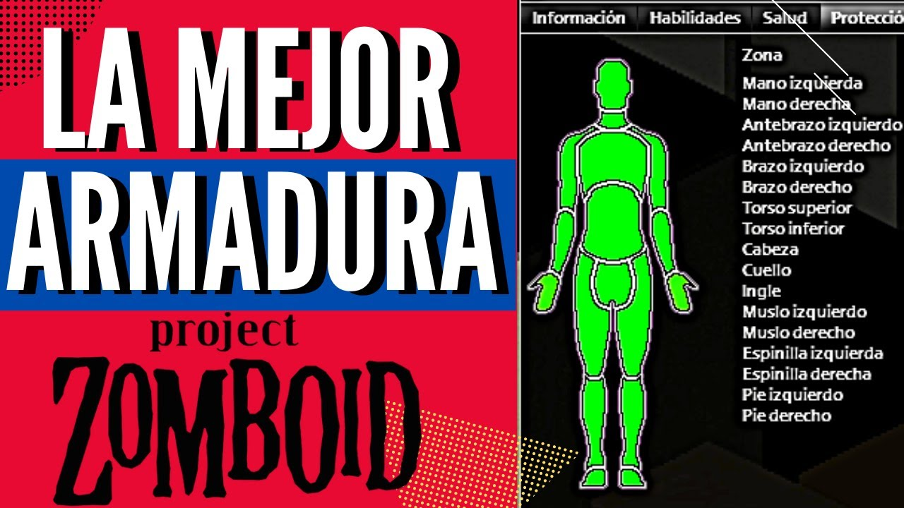

Aprende a sobrevivir en el mundo post-apocalíptico de Project Zomboid.
Esta guía está pensada especialmente para jugadores novatos, ofreciéndoles consejos y recursos clave para mantenerse con vida en el juego. Puede ser breve, pero incluye tres consejos esenciales que te ayudarán a sobrevivir y luego te tocara aprender sobre la marcha.
Encuentra un lugar seguro para refugiarte. Es importante tener un refugio donde puedas protegerte de los zombis y otros peligros. Normalmente cuando incias una simple casa puede ser un refugio seguro, pero a medida que avances en el juego te daras cuenta que necesitas un lugar mas espacioso ¿Por qué? El almacenamiento es un factor importante si buscas guardar bastante comida, libros, armas (Si son de fuego con aun mas necesidad para almacenar balas), distintos coleccionables y cuando consigas tu primer vehiculo, un lugar donde guardarlo, recomendaciones propias el motel de Riverside.
Recolecta suministros esenciales. Asegúrate de tener comida, agua, armas y herramientas para sobrevivir. Cada objeto tiene su utilidad y categoria, desde Comida, hasta Medicina, esta ultima mencionada es necesaria, cuando encuentres ropa (No ensangrentada) recuerda hacer eestales de telas para vendas improvisadas.
Mantente alerta y evita a los zombis. Siempre ten un una buena arma a mele (Para no alertar a nadie) y no te desesperes por correr de los zombis, ellos son lo suficientemente lentos como para que puedas perderlos en una casa cualquiera, entrando y saliendo por la parte de atras de la casa, a menos que te gusten los desafios y uses el mod de zombies corredores. Otro detalle importante de tu seguridad es tu proteccion, buena ropa resistente como chaquetas de cuero, o cascos, ademas de buenas botas y pantalon (Para evitar a los zombies que se arrastran y te puedan sorprender).
Visita los siguientes enlaces para obtener más información: